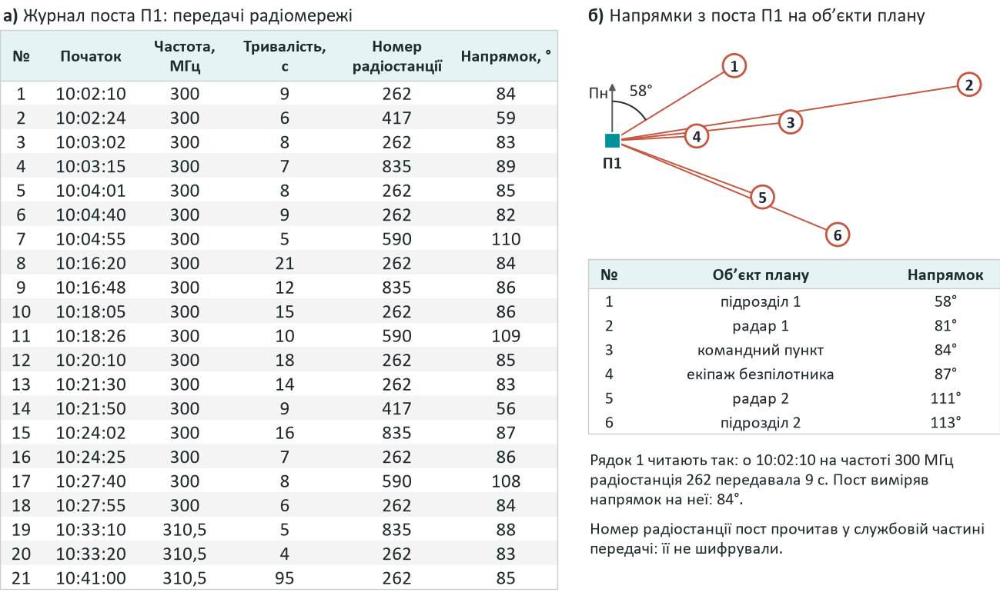
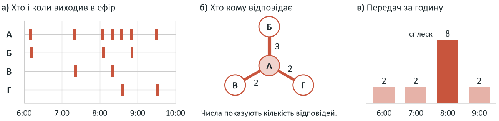
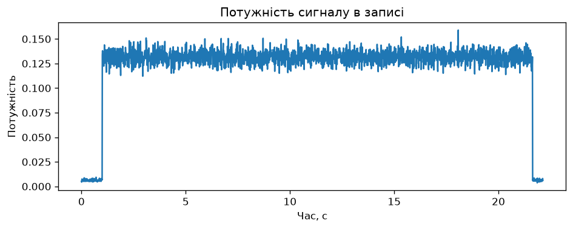

Тема 4. Радіорозвідка: перехоплення та аналіз комунікацій
Тут зібрано все для практичної частини теми: вправа з журналом радіомережі, відповіді до якої можна перевірити просто на цій сторінці, аркуш для друку, запис і Jupyter Notebook до завдання 2, журнал за добу до завдання 3, початок пошуку до завдання 4, посилання на програми й публікації, названі в темі, і відповіді.
Вправа № 1. Хто з ким говорить
Пост радіорозвідки П1 від 10:00 до 11:00 стежив за радіомережею навчального району і записав 21 передачу (рис. 4.4, а). Зміст передач зашифровано, тож є лише метадані. Останній стовпець журналу містить напрямок на радіостанцію: кут у градусах від півночі за годинниковою стрілкою (рис. 4.4, б). Пост вимірює напрямок із похибкою до 3°. Радіостанція може стояти біля будь-якого об’єкта плану. Вважайте, що радіостанція відповідає попередній, якщо починає передачу не пізніше ніж через 30 с після кінця її передачі. Працюйте в парі.

Журнал і напрямки як таблиці
Журнал поста П1.
| № | Початок | Частота, МГц | Тривалість, с | Номер радіостанції | Напрямок, ° |
|---|---|---|---|---|---|
| 1 | 10:02:10 | 300 | 9 | 262 | 84 |
| 2 | 10:02:24 | 300 | 6 | 417 | 59 |
| 3 | 10:03:02 | 300 | 8 | 262 | 83 |
| 4 | 10:03:15 | 300 | 7 | 835 | 89 |
| 5 | 10:04:01 | 300 | 8 | 262 | 85 |
| 6 | 10:04:40 | 300 | 9 | 262 | 82 |
| 7 | 10:04:55 | 300 | 5 | 590 | 110 |
| 8 | 10:16:20 | 300 | 21 | 262 | 84 |
| 9 | 10:16:48 | 300 | 12 | 835 | 86 |
| 10 | 10:18:05 | 300 | 15 | 262 | 86 |
| 11 | 10:18:26 | 300 | 10 | 590 | 109 |
| 12 | 10:20:10 | 300 | 18 | 262 | 85 |
| 13 | 10:21:30 | 300 | 14 | 262 | 83 |
| 14 | 10:21:50 | 300 | 9 | 417 | 56 |
| 15 | 10:24:02 | 300 | 16 | 835 | 87 |
| 16 | 10:24:25 | 300 | 7 | 262 | 86 |
| 17 | 10:27:40 | 300 | 8 | 590 | 108 |
| 18 | 10:27:55 | 300 | 6 | 262 | 84 |
| 19 | 10:33:10 | 310,5 | 5 | 835 | 88 |
| 20 | 10:33:20 | 310,5 | 4 | 262 | 83 |
| 21 | 10:41:00 | 310,5 | 95 | 262 | 85 |
Напрямки з поста П1 на об’єкти плану.
| № | Об’єкт плану | Напрямок |
|---|---|---|
| 1 | підрозділ 1 | 58° |
| 2 | радар 1 | 81° |
| 3 | командний пункт | 84° |
| 4 | екіпаж безпілотника | 87° |
| 5 | радар 2 | 111° |
| 6 | підрозділ 2 | 113° |
- Скільки радіостанцій працювало в мережі? Скільки передач зробила кожна?
- Накресліть схему зв’язків, як на рис. 4.3, б. Побудуйте діаграму кількості передач за кожні 15 хвилин, як на рис. 4.3, в.
- З якою радіостанцією говорять усі інші? Коли мережа працювала найактивніше і що це могло означати? Чого з журналу дізнатися не можна?
- Порівняйте напрямки на радіостанції з напрямками на об’єкти плану. Біля якого об’єкта, найімовірніше, стоїть кожна радіостанція? Напрямок показує лише лінію від поста. Запропонуйте, який ще вимір допоміг би знайти на цій лінії саму радіостанцію. Свою думку перевірите в темі 6.
Зразок до кроку 2 показано на рис. 4.3: схема зв’язків (б) і діаграма (в) для іншого, меншого журналу.

Перевірте себе
Оберіть відповіді й натисніть «Перевірити». Схему зв’язків і діаграму накресліть на аркуші або в зошиті: сторінка їх не перевіряє. Кнопка «Показати пояснення» відкриває відповіді до всіх кроків.
Аркуш для друку
Аркуш до вправи № 1 (файл PDF, дві сторінки формату А4). На першій сторінці рис. 4.4, збільшений в 1,6 раза. На другій текст вправи й місце для відповідей: таблиці, рамка для схеми зв’язків і сітка для діаграми.
Jupyter Notebook до завдання 2
У підручнику завдання 2 записано так:
Потрібен комп’ютер з інтернетом. На сторінці теми є звуковий файл із записом навчальної передачі та Jupyter Notebook. Jupyter Notebook — це файл, у якому пояснення чергуються з короткими програмами мовою Python. Кожну програму запускають окремо й одразу бачать її результат. Відкрийте Jupyter Notebook у безкоштовному сервісі Google Colab: він працює у браузері. У записі чергуються два звуки: нижчий означає 0, вищий означає 1. У Jupyter Notebook перетворіть запис на біти, а біти на текст. Службову частину передачі не зашифровано, а зміст зашифровано простим ключем: числом від 0 до 255. Знайдіть ключ, пробуючи всі числа по черзі. Ключ сучасної мобільної мережі має 128 біт. Порахуйте в Jupyter Notebook, скільки часу тривав би перебір усіх таких ключів.
Запис навчальної передачі можна прослухати тут або зберегти: tema-4-peredacha.wav (звуковий файл, 22 с).
Щоб працювати в сервісі Google Colab, нічого встановлювати не треба. Потрібен лише обліковий запис Google.
- Клацніть посилання «Від запису до тексту»: браузер збереже Jupyter Notebook, файл
tema-4-jupyter-notebook.ipynb, в теці завантажень. - Відкрийте сайт сервісу colab.research.google.com і ввійдіть в обліковий запис Google.
- У меню «Файл» оберіть команду, яка відкриває Jupyter Notebook, збережений на комп’ютері. Якщо меню сервісу англійською, це меню File і команда Upload notebook. Укажіть збережений файл: він відкриється, і першим у ньому буде заголовок «Тема 4. Від запису до тексту».
- Jupyter Notebook складається з частин, які називають комірками: в одних комірках текст, в інших програма. Перша комірка з програмою починається словами «# Запис навчальної передачі зі сторінки теми 4». Клацніть цю комірку й натисніть Shift+Enter: комірка виконається, а під нею з’явиться результат.
- Так само, згори донизу, виконуйте решту комірок із програмою, а комірки з текстом читайте. Перша програма сама бере запис із цієї сторінки. Під другою програмою з’явиться рисунок, як нижче.

Далі працюйте за текстом самого файлу: він веде етапами перехоплення до змісту передачі й закінчується завданнями.
Журнал до завдання 3
У підручнику завдання 3 записано так:
Потрібен комп’ютер із редактором таблиць, наприклад Excel, Google Таблиці чи LibreOffice Calc. На сторінці теми є файл із журналом тієї самої радіомережі за добу. З’ясуйте, о котрій годині мережа найактивніша і хто з ким говорить найчастіше. Для кожної відповіді доберіть найкращий спосіб її показати: таблицю, діаграму чи схему. Поясніть вибір.
Журнал радіомережі за добу (файл для редактора таблиць, 160 передач). Його відкривають Excel, Google Таблиці та LibreOffice Calc.
У файлі ті самі стовпці, що й у журналі вправи (рис. 4.4), і два нові. Стовпець «Година» містить годину доби, у яку почалася передача. Стовпець «Кому відповідає» містить номер радіостанції, якій ця передача відповіла. Правило те саме, що у вправі: відповідь починається не пізніше ніж через 30 с після кінця передачі іншої радіостанції. Якщо передача нікому не відповідає, клітинка порожня. Ось перші рядки файлу.
| № | Початок | Година | Частота, МГц | Тривалість, с | Номер радіостанції | Напрямок, ° | Кому відповідає |
|---|---|---|---|---|---|---|---|
| 1 | 0:01:50 | 0 | 300 | 8 | 262 | 84 | |
| 2 | 0:02:04 | 0 | 300 | 6 | 417 | 59 | 262 |
| 3 | 0:02:42 | 0 | 300 | 9 | 262 | 83 | |
| 4 | 0:02:55 | 0 | 300 | 6 | 835 | 89 | 262 |
- Відкрийте файл у редакторі таблиць.
- Порахуйте, скільки передач почалося в кожну годину доби. Це зробить зведена таблиця: засіб редактора, який групує рядки за значенням стовпця й рахує їх. Рядками зведеної таблиці зробіть «Година». Для значень оберіть кількість, а не суму.
- Порахуйте, скільки разів кожна радіостанція відповіла кожній іншій. У новій зведеній таблиці рядками зробіть «Номер радіостанції», а стовпцями «Кому відповідає».
- Додайте відповіді в обидва боки. Скільки разів перша радіостанція відповіла другій і друга першій, стільки разів говорила ця пара.
- Доберіть для кожної з двох відповідей спосіб показу: таблицю, діаграму чи схему. Поясніть вибір.
Як зробити зведену таблицю й діаграму, пояснює довідка кожного редактора.
| Редактор таблиць | Зведена таблиця | Діаграма |
|---|---|---|
| Excel | «Створення зведеної таблиці для аналізу даних аркуша» | «Створення діаграми від початку до кінця» |
| Google Таблиці | «Як створювати й використовувати зведені таблиці» | «Як додати й змінити діаграму або графік» |
| LibreOffice Calc | «Створення зведених таблиць» | «Вставка діаграм» |
Google Таблиці відкривають такий файл після завантаження на Google Диск: про це розповідає сторінка довідки «Як працювати з файлами Office». Довідку LibreOffice перекладено українською не повністю.
Початок пошуку до завдання 4
У підручнику завдання 4 записано так:
Потрібен інтернет. Знайдіть докладний опис одного реального випадку перехоплення радіозв’язку. Підтвердьте цей випадок двома незалежними джерелами. Запишіть, що перехопили, на якому етапі це вдалося і яке слабке місце використали. Початок пошуку є на сторінці теми.
Ось публікації про реальні випадки перехоплення. Оберіть один випадок і знайдіть до нього друге джерело, яке не переказує першого.
- Russia Struggled to Capture a Ukrainian Town. Intercepted Radio Messages Show Why. Відеорозслідування газети The New York Times, з якого починається тема. Опубліковане на каналі газети в YouTube 24 березня 2022 р., англійською мовою.
- New York Times Story on Intercepted Russian Forces Radio Communications. Допис блогу про приймачі SDR від 25 березня 2022 р., англійською мовою. Розповідає про це відеорозслідування: радіоаматори записали відкриті переговори російських військ.
- How does Ukraine keep intercepting Russian military communications? Розмова на американському радіо NPR від 26 квітня 2022 р., текст англійською мовою. Про незашифровані радіостанції російських військ і про їхні телефонні розмови.
- Preliminary Lessons in Conventional Warfighting from Russia’s Invasion of Ukraine: February–July 2022. Звіт британського інституту RUSI від 30 листопада 2022 р., англійською мовою. На с. 31 пояснено, чому російські підрозділи говорили відкрито і що це дало українським військам.
- Tiny Ukrainian receiver intercepts Russian drone feeds in real time. Стаття видання Defense News від 2 листопада 2026 р., англійською мовою. Про приймач, який показує відео з ворожих безпілотників.
- The History of Traffic Analysis: World War I – Vietnam. Брошура Агентства національної безпеки США, 2013 р., англійською мовою. Історія аналізу трафіку, починаючи з Першої світової війни.
Учителеві: перед уроком відкрийте ці публікації самі. Вони розміщені на сторонніх сайтах, тому їх можуть змінити чи вилучити.
Відповіді
Відповіді до вправи, контрольних запитань і завдань теми. Спершу виконайте вправу самі.
Програми, названі в темі
- gr-iridium. Доповнення до програми GNU Radio. Виявляє в ефірі короткі сигнали супутників зв’язку Iridium і демодулює їх. Опис англійською мовою. Програмі потрібен приймач SDR з антеною. Підходить і приймач RTL-SDR з теми 3: він охоплює частину смуги частот цих супутників.
- iridium-toolkit. Набір програм, які розбирають біти від програми gr-iridium і показують, які відомості вони несуть. Опис англійською мовою.
- Investigating the Iridium Satellite Network. Доповідь авторів обох програм на конгресі Chaos Communication Congress у грудні 2024 р. Відео англійською мовою, 61 хв. Автори розповідають, як приймають сигнали супутників Iridium і які відомості та метадані з них дістають.
Інші публікації, названі в темі
- Як смартфон може стати загрозою на фронті: Сухопутні війська ЗСУ нагадують про правила кібергігієни. Публікація агентства АрміяInform від 11 лютого 2025 р., українською мовою. Правила Сухопутних військ України: що вимикати в телефоні й чого не публікувати.
- APELLA. Сторінка автоматизованого поста радіорозвідки на сайті компанії «Інфозахист», українською мовою.
- IZ-2000. Сторінка генератора електромагнітного шуму на сайті компанії «Інфозахист», українською мовою.
- W. van Eck. Electromagnetic Radiation from Video Display Units: An Eavesdropping Risk? Журнал Computers & Security, 1985 р., том 4, с. 269–286. Стаття, про яку йдеться в рубриці «Це цікаво», англійською мовою.
Фото з Wikimedia Commons
Фотографії на рис. 4.1 підручника взято зі сховища вільних зображень Wikimedia Commons. Для друку кожну з них зменшено й обрізано. Назва фотографії веде на її сторінку в сховищі: там зазначено автора й умови використання.
- Рис. 4.1, фото 1: 21st Theater Sustainment Command hosts Expert Soldier Badge (8395693). Автор: S. Signor, U.S. Army. Суспільне надбання.
- Рис. 4.1, фото 2: Warrior FPV Drone Course (9671041). Автор: T. Wassmer, U.S. Army. Суспільне надбання.
- Рис. 4.1, фото 3: Starlink dish 01. Автор: Wikideas1. Ліцензія: CC0.
.jpg){kind=link}
.jpg){kind=link}